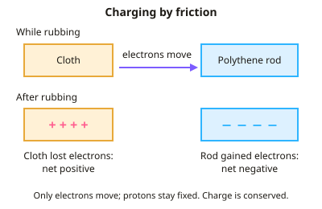

GCSE Physics · Topic 12
Static electricity and electric fields
Static electricity and electric fields explains sparks, shocks and the electric forces between charged objects.
We will see how rubbing materials transfers electrons, how charged objects attract and repel, and what electric fields look like.
Then we look at useful applications, like paint spraying and photocopiers, and the dangers of static electricity and how to prevent them.
- 3 subtopics
- 202 questions
- Free: 12.1 notes and 10 questions
In this topic
- 12.1Static charge and charging by frictionFree below · 67 questions
- 12.2Electric fields and electrostatic forcesOpen in Full Marks · 73 questions
- 12.3Uses and dangers of static electricityOpen in Full Marks · 62 questions
12.1 · Free notes
Static charge and charging by friction

Key points
- Atoms contain a nucleus of positive protons and neutral neutrons, surrounded by negative electrons. An atom is neutral because it has equal numbers of protons and electrons.
- Rubbing two different insulating materials together causes friction, which transfers electrons from one surface to the other.
- The material that gains electrons becomes negatively charged. The material that loses electrons becomes positively charged.
- Only electrons move. Protons are fixed in the nucleus, so positive charge is never transferred by friction.
- Both objects end up with equal and opposite charges. The total charge stays the same (conservation of charge).
- Like charges repel and unlike charges attract. These are non-contact forces, and the two objects exert equal and opposite forces on each other.
- A charged insulator attracts small neutral objects such as paper bits or a wall. Its field makes electrons in the neutral object shift (induced charge), so the nearer surface has the opposite charge.
- Insulators (polythene, acetate, rubber) keep their charge because electrons cannot flow through them. Conductors such as metals lose charge to earth through the person holding them.
- Earthing means connecting a charged object to the ground with a conductor. Electrons flow to or from the Earth and discharge the object.
- Charge is measured in coulombs (C). Q = I t: charge (C) = current (A) × time (s).
- Testing for charge: only repulsion proves an object is charged with the same sign as the test charge. Attraction could mean opposite charge or a neutral object.
In more detail
- Examples: rubbing a polythene rod with a cloth gives the rod a negative charge (it gains electrons); rubbing an acetate rod makes it positive (it loses electrons).
- Worked charge: a current of 5.0 mA flowing for 20 s transfers Q = 0.0050 × 20 = 0.10 C.
- Gold leaf electroscope: when charged, the leaf and rod have the same charge and repel, so the leaf rises.
- Why metals don't hold charge when held: electrons flow through the metal and your body to earth, so the charge escapes.
Practice
Static charge and charging by friction: 10 questions
Pick an answer to check it, or open the answer for the explanation.
1. A polythene rod becomes negatively charged when rubbed with a cloth. What has happened?
- Protons moved from the cloth to the rod
- Electrons moved from the cloth to the rod
- Electrons moved from the rod to the cloth
- Protons moved from the rod to the cloth
Show answer
B: Electrons moved from the cloth to the rod. The rod became negative, so it gained electrons. The electrons came from the cloth. Protons are fixed in nuclei and do not move.
2. A cloth rubs an acetate rod, and the rod becomes positively charged. What is the charge on the cloth?
- Negative, because it gained electrons
- Positive, because it gained protons
- Positive, because it lost electrons
- Neutral, because charge is destroyed
Show answer
A: Negative, because it gained electrons. The acetate lost electrons, so they went to the cloth. The cloth gained electrons and is negative. Charge is conserved.
3. A current of 0.50 A flows for 20 s. How much charge flows?
- 0.025 C
- 2.5 C
- 40 C
- 10 C
Show answer
D: 10 C. Q = I t = 0.50 A × 20 s = 10 C.
4. 6.0 C of charge passes a point in 2.0 minutes. What is the average current?
- 0.33 A
- 3.0 A
- 12 A
- 0.050 A
Show answer
D: 0.050 A. Convert time to seconds first: 2.0 min = 120 s. I = Q ÷ t = 6.0 ÷ 120 = 0.050 A.
5. Two light balloons hang side by side and move apart from each other. What can you conclude?
- They carry the same type of charge
- They carry opposite charges
- One is charged and one is neutral
- Both are neutral
Show answer
A: They carry the same type of charge. Only like charges repel. Attraction can occur between unlike charges or between a charged and a neutral object, but repulsion cannot.
6. Rod X repels a negatively charged ball. Rod Y attracts the same ball. Which statement must be true?
- X is positively charged
- X is negatively charged
- Y is positively charged
- Y is negatively charged
Show answer
B: X is negatively charged. Repulsion only happens between like charges, so X is negative. Y might be positive or might be neutral (induced attraction).
7. Why does a charged balloon stick to an uncharged wall?
- Opposite charge is induced on the nearby wall surface
- The balloon and wall carry the same charge
- Friction glues the balloon to the wall
- The wall gains protons from the balloon
Show answer
A: Opposite charge is induced on the nearby wall surface. The balloon's charge makes electrons in the wall surface move, leaving the nearer surface with the opposite charge. Opposite charges attract.
8. A student holds a copper rod in her hand and rubs it with a cloth. It shows no charge. Why?
- Copper has no free electrons to move
- Rubbing never causes friction on metal
- Copper's protons cancel the charge
- Copper conducts, so charge flows through her to earth
Show answer
D: Copper conducts, so charge flows through her to earth. Copper is a conductor. Any charge gained flows through the student's body to earth, so the rod cannot stay charged.
9. Why is it electrons, not protons, that are transferred when objects are charged by friction?
- Protons are fixed in the nucleus, but outer electrons can be removed
- Electrons are found only on insulators
- Protons have no charge
- Electrons are heavier than protons
Show answer
A: Protons are fixed in the nucleus, but outer electrons can be removed. Protons are held inside the nucleus by strong forces. Outer electrons are loosely held and can be rubbed off onto another surface.
10. A negatively charged metal sphere is connected to the ground by a copper wire. What happens?
- Electrons flow from the sphere to earth
- Electrons flow from earth to the sphere
- Protons flow from the sphere to earth
- Nothing happens, so the charge stays
Show answer
A: Electrons flow from the sphere to earth. The sphere has excess electrons. They repel each other and flow through the conducting wire to earth, so the sphere is discharged.
Keep going in Full Marks
Full Marks has 67 questions on Static charge and charging by friction (57 more than here), set out in practice levels. You also get notes and 3D models for all 3 subtopics of Static electricity and electric fields, plus games, timed exams and past papers.